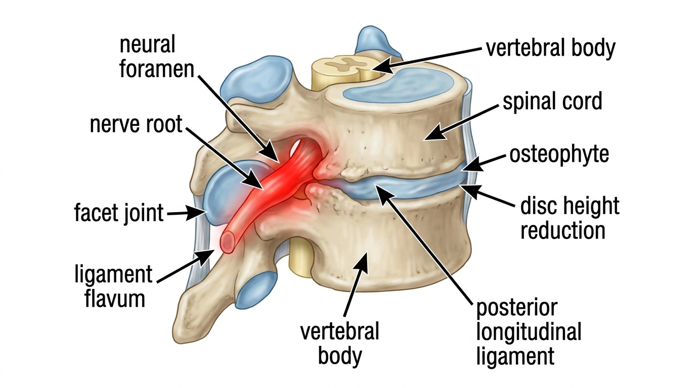

颈椎脊椎病性神经根病的病理机制与非手术保守治疗方案
颈椎脊椎病性神经根病是指由于颈椎发生退行性改变导致椎间孔狭窄，从而对神经根造成物理性压迫的一种疾病。其主要临床表现为始于后颈部并向肩部、手臂及指尖放射的疼痛、感觉异常以及肌肉力量减弱。随着电脑与智能手机使用频率的增加，头部前倾姿势逐渐慢性化，该疾病的发病率也呈持续上升趋势。
椎间孔狭窄与神经根压迫的解剖学机制

各颈椎节段之间存在神经根通过的狭窄通道，即椎间孔，该空间的大小取决于椎间盘的高度、小关节的排列状态以及周围韧带与软组织的状况。随着颈椎病的进展，因退行性变导致的椎间盘高度降低、骨赘形成以及小关节肥厚等多种因素相互作用，使椎间孔的实际空间逐渐变窄。当神经根因这种狭窄而受到压迫时，疼痛与感觉异常会沿着该神经支配的皮节区域放射，严重时还可能伴随肌力下降与反射减弱等症状。相关病理学研究表明，颈椎脊椎病性神经根病是由椎间孔狭窄所诱发，这提示确保神经根受压解剖通道的空间，是具有病理生理学意义的核心治疗目标[2]。
主要临床症状与体格检查所见
颈椎脊椎病性神经根病的典型症状是Spurling征呈阳性，即当颈部向后仰或向特定方向旋转时，放射痛会随之加重。疼痛通常始于后颈部，经过肩胛区域、上臂及前臂放射至手指，具体的放射部位会因受压神经根的节段不同而有所差异。第六颈神经根受压的特征性表现为拇指与食指区域出现麻木感，而第七颈神经根受压则主要以中指为中心呈现感觉异常。患者常因夜间疼痛而抱怨睡眠障碍，慢性病例还可能伴有上肢肌力减退的体征，导致握力减弱。
单纯的颈椎间盘突出主要是因椎间盘本身的急性肿胀或破裂而压迫神经根，而颈椎脊椎病性神经根病则经历了一个病理生理学过程，即骨赘形成、小关节肥厚及韧带增厚等慢性退行性改变共同作用，逐渐使整个椎间孔变窄。因此，该疾病往往表现出更为缓慢的进展速度以及更具慢性化的临床病程。
非手术保守治疗的学术依据与处理原则
颈椎神经根病的治疗原则上应根据症状的严重程度及神经功能缺损的有无采取分级处理方案。在急性期，缓解疼痛与控制炎症是首要任务；待症状趋于稳定后，旨在确保椎间孔空间并恢复颈椎正常生物力学排列的保守治疗则发挥着至关重要的作用。有关颈椎神经根病保守治疗临床疗效的文献指出，相较于侵入性手术，通过物理性方法进行症状管理，可以成为具有学术意义的选择方案[1]。
生物力学空间减压推拿 (SART Protocol) 的治疗思路
Bodyall韩医院所采用的旨在弥补传统整骨推拿疗法局限性，通过生物力学机制扩大脊椎节段间隙与椎间孔的 [生物力学空间减压推拿 (SART Protocol)]，旨在通过使颈椎前凸曲度正常化，并以非手术方式缓解椎间孔周围软组织的粘连，从而确保神经通路的物理空间。这是一种通过调节颈椎周围肌肉与韧带张力、恢复关节正常活动范围，进而促进神经系统症状缓解的处理方式。该原理在学术上与手术干预前，为神经根压迫病灶寻求空间余地的保守治疗理念相契合。生物力学空间减压推拿 (SART Protocol) 在临床上被作为颈椎脊椎病性神经根病手术前可安全考虑的非手术保守治疗替代方案之一而加以运用。
| 分类 | 急性期处理方式 | 保守恢复期处理方式 |
|---|---|---|
| 治疗目标 | 缓解疼痛与炎症 | 确保椎间孔空间与排列正常化 |
| 主要干预措施 | 制动、抗炎处理 | 生物力学空间减压推拿 (SART Protocol) |
| 预期效果 | 减轻急性疼痛 | 缓解神经压迫及预防复发 |
日常管理及预防复发的姿势矫正原则
长时间维持头部前倾姿势，会作为一种生物力学负担因素，持续使椎间孔空间变窄。建议将显示器与智能手机屏幕置于视线水平，并在长时间坐姿期间每40分钟进行一次颈部后伸拉伸，以反复确保椎间孔空间。由于睡眠时枕头过高可能使颈椎前凸曲度变形，建议使用能自然支撑颈椎曲度的低枕。
核心摘要
- 颈椎脊椎病性神经根病因椎间孔狭窄导致神经根受压，从而引发放射痛与麻木感。
- 放射痛的具体部位会因第六或第七颈神经根的受压节段不同而有所差异。
- 非手术保守治疗被视为进入手术阶段之前，具有学术意义的选择方案。
- 生物力学空间减压推拿 (SART Protocol) 是以确保椎间孔空间为目标的一种非手术处理方式。